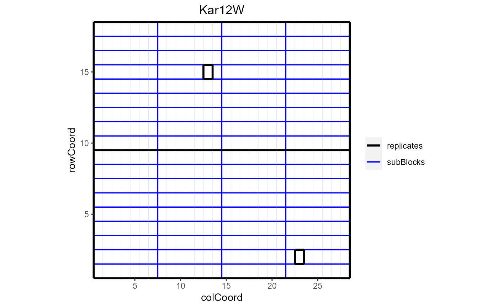
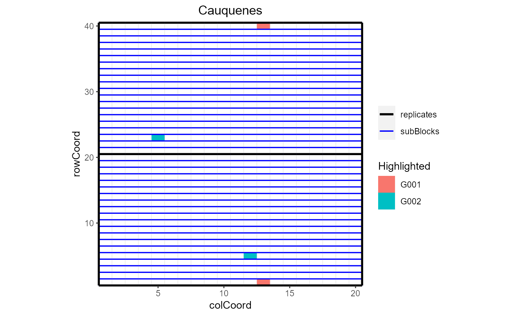
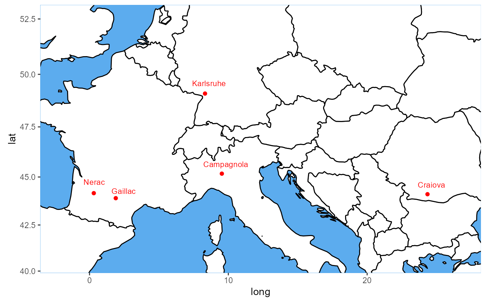
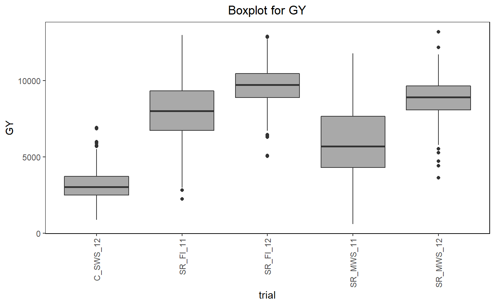
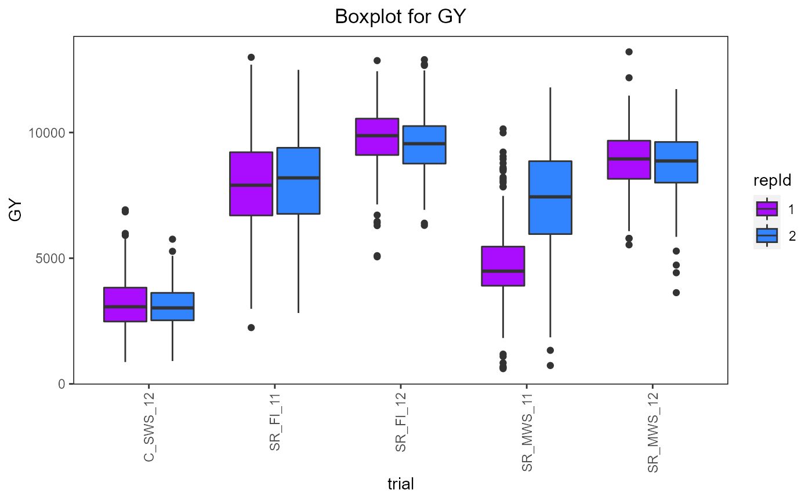
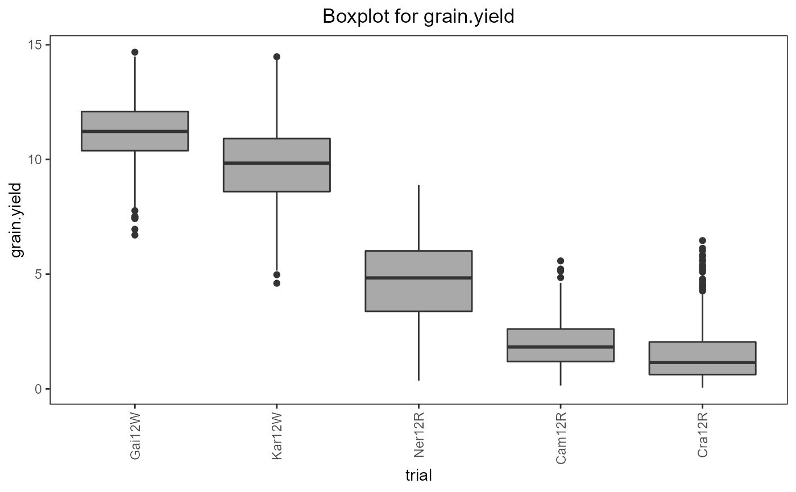
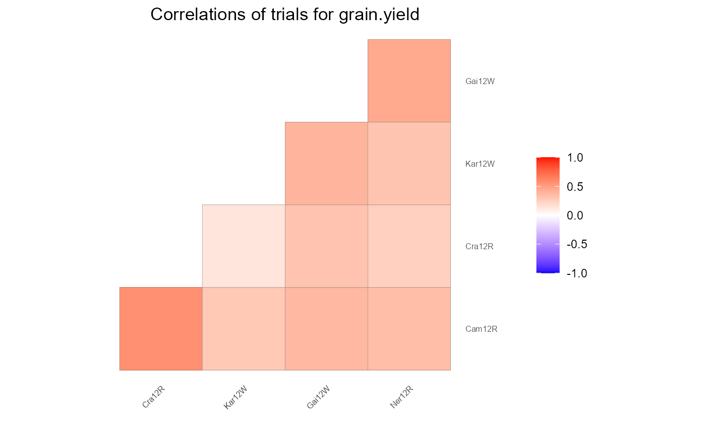
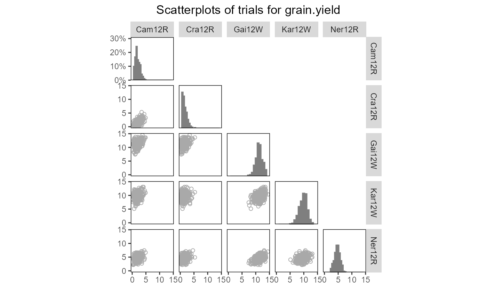
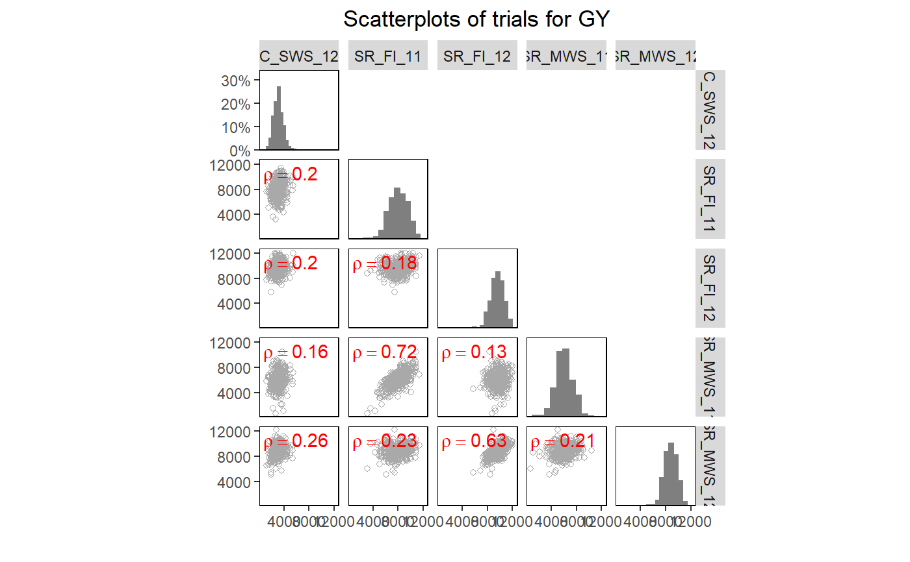

Plotting function for objects of class TD. Plots either the layout of the different trials within the TD object or locates the trials on a map. Also a boxplot can be made for selected traits and trials, a plot of correlations between trials and a scatter plot matrix. A detailed description and optional extra parameters of the different plots is given in the sections below.
# S3 method for TD plot( x, ..., plotType = c("layout", "map", "box", "cor", "scatter"), trials = names(x), traits = NULL, title = NULL, output = TRUE )
| x | An object of class TD. |
|---|---|
| ... | Extra plot options. Described per plotType in their respective section. |
| plotType | A single character string indicating which plot should be made. See the sections below for a detailed explanation of the plots. |
| trials | A character vector indicating which trials to include in the plot. |
| traits | A character vector indicating for which traits a plot should
be made. Only used if |
| title | A character string used a title for the plot. Note that when a title is specified and multiple plots are created, all plots will get the same title. |
| output | Should the plot be output to the current device? If
|
Plots the layout of the selected trials.
This plot can only be made for trials that contain both row (rowCoord)
and column (colCoord) information. If either one of those is missing
the trial is skipped with a warning. If blocks (subBlock) are
available for a trial these can be colored in different colors per block by
setting colorSubBlock = TRUE. If replicates (repId) are
available a black line is plotted between different replicates. Missing plots
are indicated in white. These can either be single plots in a trial or
complete missing columns or rows.
Extra parameter options:
Should individual genotypes be indicated as text in the plot?
Defaults to FALSE
A character vector of genotypes to be highlighted in the plot.
Should blocks be colored with a different color per
subBlock? Defaults to FALSE. colorSubBlock is ignored when
highlight is used to highlight genotypes.
A map is plotted with the locations of the trials in the TD object.
Mapping the trials is done based on latitude and longitude that can be
added when creating an object of class TD. Trials for which either latitude
or longitude is not available are skipped with a warning message.
The countries in which the trials are located will be plotted on a single
map and the location of the trials will be indicated on this map. The
actual plot is made using ggplot, but for getting the data for the borders
of the countries the maps package is needed.
Extra parameter options:
A character string indicating a column in TD by
which the trials on the map are colored.
A character vector with plot colors for the trials. A
single color when colorTrialBy = NULL, a vector of colors otherwise.
Should trial names be printed. Defaults to
TRUE. Setting this to FALSE can be useful if there are many
trials.
A positive numerical value indicating the minimum range (in degrees) for the latitude on the plotted map. Defaults to 10.
A positive numerical value indicating the minimum range (in degrees) for the longitude on the plotted map. Defaults to 5.
Creates a boxplot per selected trait grouped by trial. Extra parameter options:
A character string indicating a column in TD by which
the boxes in the plot should be grouped. By default the boxes are grouped
per trial.
A character string indicating a column in TD by
which the boxes are colored. Coloring will be done within the groups
indicated by the groupBy parameter.
A character vector with plot colors for the trials. A
single color when colorTrialBy = NULL, a vector of colors otherwise.
A character string indicating the way the boxes should be ordered. Either "alphabetic" for alphabetical ordering of the groups, "ascending" for ordering by ascending mean, or "descending" for ordering by descending mean. Default boxes are ordered alphabetically.
Draws a heat map of correlations between trials per selected trait. If genotypes are replicated within trials genotypic means are taken before computing correlations. The order of the trials in the heat map is determined by clustering them. Closely related trials will be plotted close to each other.
Draws a scatter plot matrix per selected trait. If genotypes are replicated
within trials genotypic means are taken before plotting. The lower left of
the matrix contains scatter plots between trials. The diagonal contains
histograms of the data per trial.
Extra parameter options:
A character string indicating a column in TD by
which the genotypes in the scatter plots are colored.
A character vector with plot colors for the genotypes. A
single color when colorGenoBy = NULL, a vector of colors otherwise.
A character string indicating a column in TD by
which the trials in the histograms are colored.
A character vector with plot colors for the trials. A
single color when colorTrialBy = NULL, a vector of colors otherwise.
A character vector indicating the order of the trials in the plot matrix (left to right and top to bottom). This vector should be a permutation of all trials plotted.
A character string indicating the position of the correlation
between trials displayed in each plot, either "tl" for top left, "tr", for
top right, "bl" for bottom left or "br" for bottom right. If NULL,
the default, then no correlation is added to the plot.
Other functions for TD objects:
TD,
getMeta(),
summary.TD()
data("wheatChl") ## Create a TD object. wheatTD <- createTD(data = wheatChl, genotype = "trt", repId = "rep", subBlock = "bl", rowCoord = "row", colCoord = "col") ## Add meta data to be able to plot locations on a map. wheatMeta <- getMeta(wheatTD) wheatMeta$trLocation <- c("Cauquenes", rep("Santa Rosa", times = 4)) wheatMeta$trLat <- c(-35.58, rep(-36.32, times = 4)) wheatMeta$trLong <- c(-72.17, rep(-71.55, times = 4)) wheatTD <- setMeta(wheatTD, wheatMeta) ### Layout plot. # \donttest{ ## Plot the layout of one of the trials. plot(wheatTD, trials = "C_SWS_12")## Highlight some of the genotypes in the layout. plot(wheatTD, trials = "C_SWS_12", highlight = c("G001", "G002"))## Add coloring by repId to the boxes. plot(wheatTD, plotType = "box", traits = "GY", colorTrialBy = "repId")## Sort the boxes in descending order. plot(wheatTD, plotType = "box", traits = "GY", orderBy = "descending")### Correlation plot. ## Plot the correlations between trials for GY. plot(wheatTD, plotType = "cor", traits = "GY")## Add correlations to top left corner of plots. plot(wheatTD, plotType = "scatter", traits = "GY", addCorr = "tl")# }